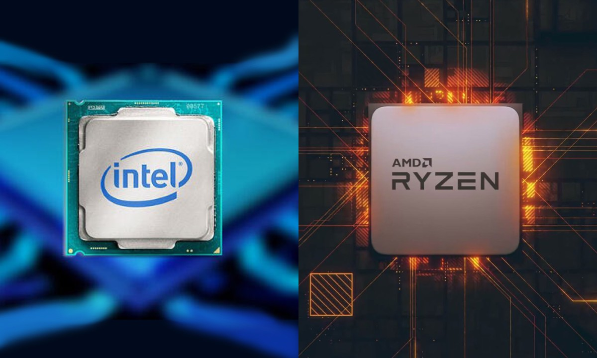

There are only two brands for a CPU (central processing unit), the ex-leading brand of CPUs from the very start Intel and the new better cheaper per core Ryzen from AMD.
AMD have bounced back as they were in the dust as they were not able to keep up with competitors in the GPU and CPU market.
AMD are becoming more popular as they are always pushing the boundaries unlike intel which have used the exact same architecture on the CPU for years.
However due to the sudden rise in Ryzen sales the prices have skyrocketed so Intel CPUs have in many cases become cheaper than the AMD version.
Also, Ryzen chips are a lot easier and cheaper to replace due to all of the recent Processers using the same Pin layout on the back. Whereas Intel ones have many depending on the year of the make and if you have an incompatible Motherboard the CPU won't fit in to the CPU socket, or if it does it might not work.
But the Motherboards will always tell you the compatible sockets on the website and or Manual.
The purpose of the CPU is to tell each component what to do and to manage the system
